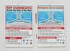

rip-current

Definition: A rip current, often simply called a rip (or misleadingly a rip tide), is a specific kind of water current that can occur near beaches with breaking waves. A rip is a strong, localized, and narrow current of water which moves directly away from the shore, cutting through the lines of breaking waves like a river running out to sea. The current in a rip is strongest and fastest next to the surface of the water.Rip currents can be hazardous to people in the water. Swimmers who are caught in a rip current and who do not understand what is happening, or who may not have the necessary water skills, may panic, or they may exhaust themselves by trying to swim directly against the flow of water. Because of these factors, rip currents are the leading cause of rescues by lifeguards at beaches, and in the United States, they are the cause of an average of 46 deaths by drowning per year.
Source: Wikipedia
Wikipedia Page (Something wrong with this association? Let us know.)
Wikidata Page (Something wrong with this association? Let us know.)
Occurs in: